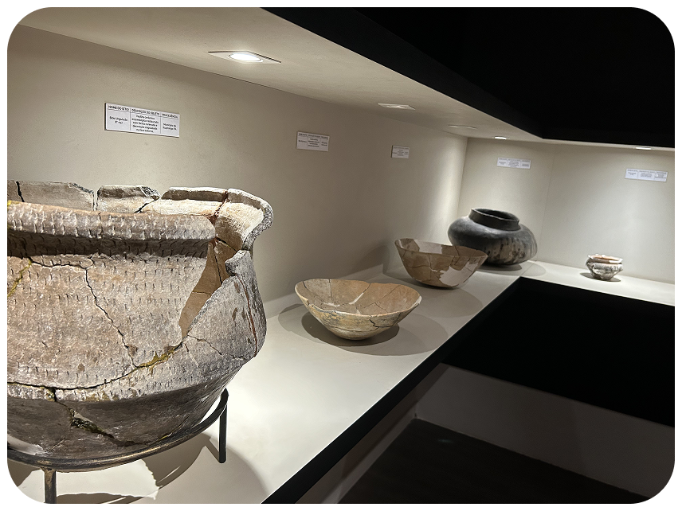
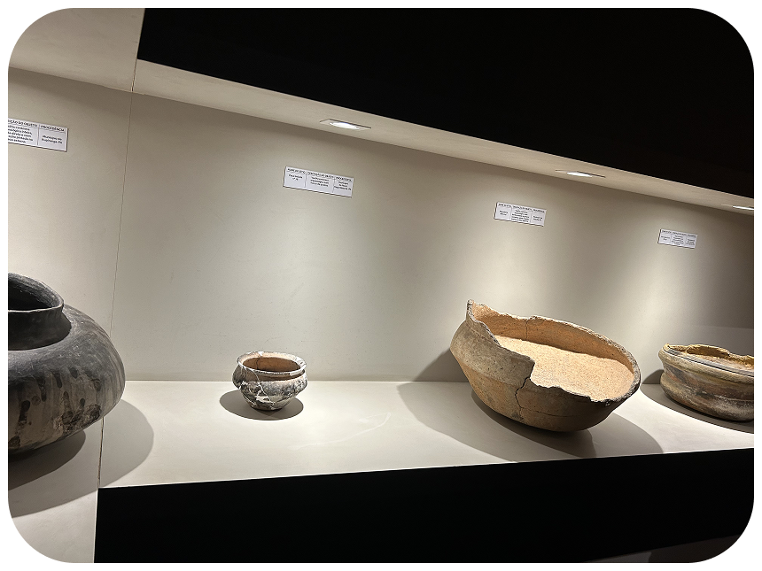
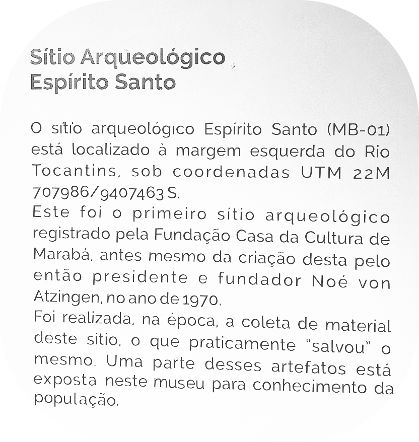
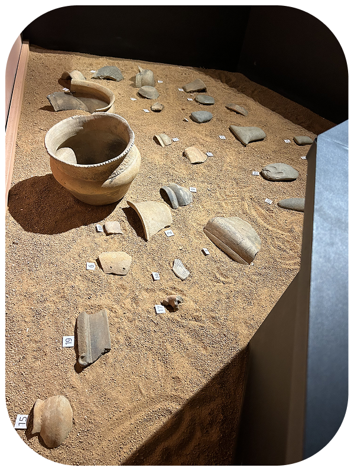
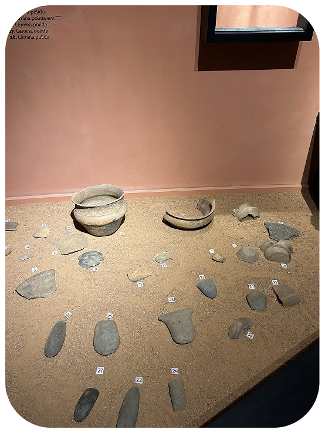
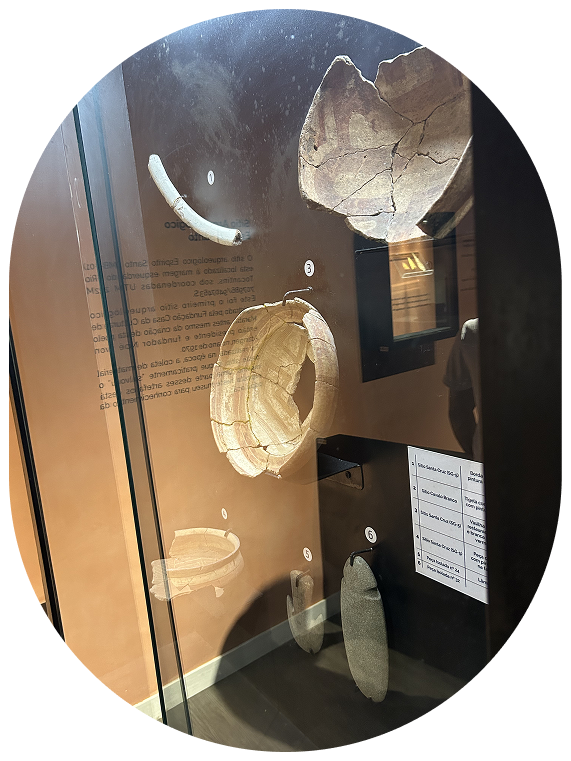
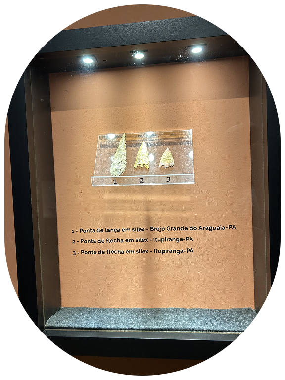
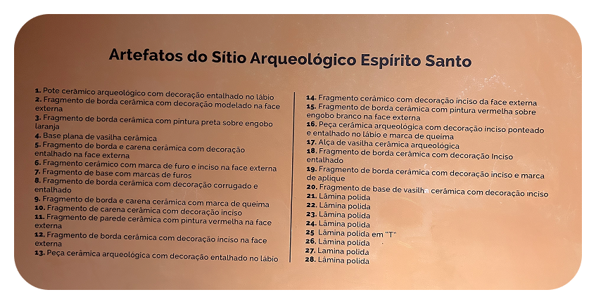

ARQUEOLOGIA
O que é Arqueologia?
Arqueologia é o estudo das sociedades do passado e do presente por meio de sua relação com a materialidade e a paisagem.

Vasilhas de cerâmicas produzidas e encontradas em sítios arqueológicos.
Cada uma conta uma história através de suas marcas.

Muitas dessas peças foram retiradas do
Sítio Arqueológico Espírito Santo

Também temos fragmentos de peças

F
R
A
G
M
E
N
T
A
D
O
S


Temos alguns designs de pontas de lâminas
Fique tranquilo!! Até os fragmentos tem descrição
Gostou do que viu? Venha ver de perto e nos faça uma visita!